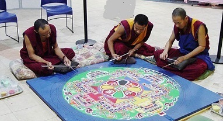
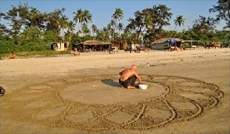
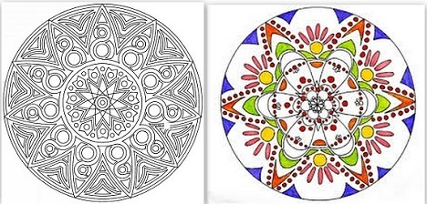
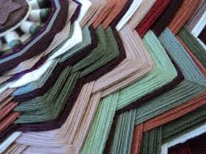
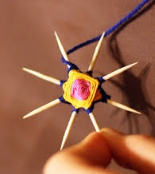
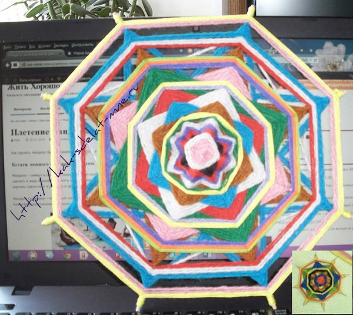

Mandala weaving - an exciting lesson
How to make a mandala with your own hands? In this article, the author will share the experience of weaving the very first mandala.
By the way, a little information about what “mandala” means.
Mandala - a symbol in a complex geometric image.
The mandala can be made of sand, wood or metal, it can be drawn or made in the form of embroidery, folded from stone or weaved from multi-colored threads. They depict it on the floor, walls, painted mandalas, as pictures are framed, and in the temples they paint vaults.
The mandala (emphasis on the first syllable) includes forms: the big circle is the Universe, the square is the sides of the world, the small circle is the dimensions of the Divine, the triangles symbolize the lotus petals.
What is Mandala for?
- Firstly, it can become your amulet, a “soothing”, magical and inspiring tool.
- Mandala serves as a symbol for meditation. Mandala is revered not only in the East, but throughout the world. This sacred attribute for worship in Hindu and Buddhist religious practice is done under a special ritual.
- It is often used as a psychotherapeutic tool to realize one’s own destiny and understanding of oneself.
This is a very short and generalized description of the meaning of the mandala.
Find coloring on the Internet, print and create! Or come up with something of your own.
Getting to work.
What is needed to weave a mandala?
- Good mood, positive thoughts.
- Four sticks. It could be anything: pencils, sushi sticks, even toothpicks for the smallest mandala. Or go and cut off a few twigs. So it was decided to ask the tree for twigs for a good deed. The branches turned out to be different in thickness, and not very straight. All this is easily fixed with a knife. In order for the sticks to become smoother, they were pulled along the entire length with a stiff tourniquet and left for the night. By the morning they straightened up.
- Multi-colored threads.
Here you need to take into account one caveat. For a mandala, it is best to take natural threads.
- Natural wool - strong, slightly prickly. It looks very good.
- Cotton, linen - a tough thread and very durable. It will look beautiful on a small mandala.
- Cotton + viscose. Very strong and shiny thread. As a rule, the thread is thin.
- Acrylic thread can be of different thicknesses and textures. Mostly fleecy. Not very strong thread. Better not to use. But learning to do the first mandala is quite suitable.
- Do not use synthetic threads similar to kapron. Such threads stretch well, and then can sag, but this should not be allowed.
The conclusions are drawn from the experience of weaving the first mandala:
- It is necessary to choose the right thread in accordance with the thickness of the sticks.
- Watch the video on weaving mandalas several times!
- Watch how the thread lies on the reverse side.
- Measure the strength of the thread tension. Otherwise, you can break it or break a ray.
So, with a good mood and the thought that the mandala will be woven at least in an hour, the author of the article starts to work.
The dream of a quick miracle crashed on a clumsiness of the hands.
** The first action was done deftly and quickly: to connect two sticks, wrap in the middle and make a cross, weave a square in the center of the cross. And so - twice, i.e. we get two crosses. In more detail and clearly about the technique of weaving a mandala, you will see in the video, at the bottom of the article.
** The next stage is the “socket”: it is necessary to connect these two crosses.
This is where the fight against their "disobedience" began. :-) Ten fingers were not enough to hold still two crosses and braid the rays with the “Star” pattern - this is when you braid through two sticks - every third. The mandala walked in all directions, not wanting to gain a foothold, and the master puffed and worried how clumsy she was.
Somehow defeating this stage of weaving, it was decided to dissolve, since everything was not very smooth. And the reverse side was completely forgotten - there the threads clung to each other and lay very ugly, but should have looked like a star.
Since the mandala was spinning in all directions, it was still possible to turn it, but then the threads on one side would stretch harder and on the other they would sag.
The master exceeded all her expectations when she aligned the distance between the rays, and broke one of the sticks. :) Since the rays were long enough, this situation was not critical.
** The third stage is braiding with squares. This is already much easier. Here we braid every second ray with a thread. You can apply 2-3 different colors. It turns out very beautifully
** The fourth stage is the belt. The easiest to weave.
Choosing a particular color of the threads for weaving the mandala, their combination, the creator can convey his state of mind at the time this action is completed. In fact, the mandala is an encrypted schematic pattern through which all wisdom, knowledge, and customs could be passed on to future generations. Creating a mandala is typical of meditation. With each turn of the thread, the master approaches the spiritual balance. In some mysterious way, not amenable to logic, anxiety goes away, mood improves, solutions to important problems are found.When creating the first mandala, there was no talk of “interweaving” affirmations. But the vitally important task at that time was solved - hone skill.
When the first mandala was woven, the general picture of the pattern was not yet clear. The main thing was to learn.
The second mandala, it was decided to do on toothpicks. For this, thin cotton threads were used. This little mandala was woven much easier.
Here they are, the first and most memorable.
When they were introduced, everyone was surprised and later admitted that contemplation on a mandala could be endless. It seems to mesmerize, distract from negative thoughts.
Perhaps the first mandalas will not be perfectly straight. Wrong colors will be chosen. But, in the world there is nothing perfect. Therefore, feel free to grab the sticks and threads and get down to action!If you like to draw, draw a mandala. Here, in general, the flight of fantasy is not limited.
What else is useful in weave of mandala.
- This is a very useful activity for developing hand motility.
- Fidgets will become more assiduous.
- Children will form an aesthetic perception of color combinations.
- This activity very well helps to train concentration and remembering.
- For children with an unstable, aggressive psyche, weaving a mandala will help to calm down.
And now, for all those who wondered how to create such beauty, a video about weaving a mandala. This is a very good guide for beginners. Watch, learn.